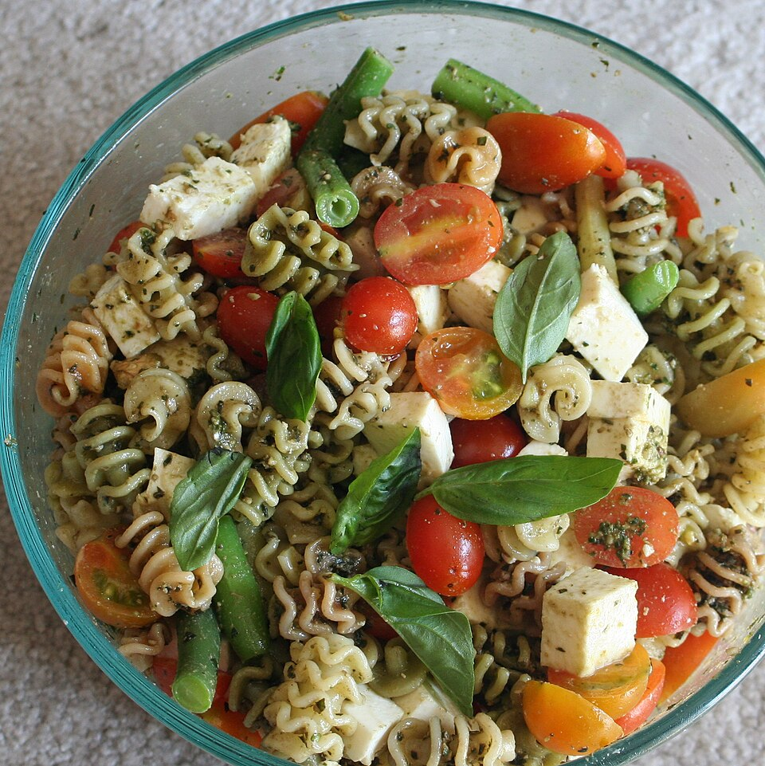

Pesto Pasta

Pesto Pasta is a fast, fresh Italian dish. Cooked pasta is tossed with a bright, herby basil pesto sauce. It's a
satisfying, no-fuss meal ready in minutes.
Ingredient
- 8 oz (about 225g) pasta (like rotini or penne).
- ½ cup store-bought or homemade pesto sauce.
- ¼ cup cherry tomatoes, halved (optional, but recommended).
Steps
- Cook Pasta: Boil the pasta according to package directions until al dente. Before draining, reserve about half a
cup of the starchy cooking water.
- Mix Sauce: Drain the pasta and return it to the pot. Add the pesto sauce. If the sauce seems too thick, add a
tablespoon or two of the reserved pasta water until it's creamy.
- Serve: Stir in the cherry tomatoes (if using). Serve immediately!
Homepage